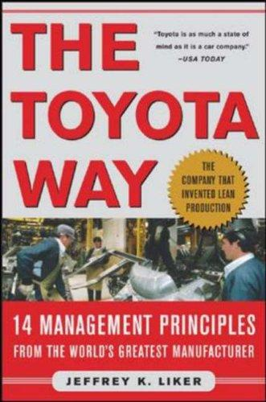

Library › Business & Startups
The Toyota Way — Summary & Key Lessons

Fourteen principles, one philosophy: respect for people plus continuous improvement made Toyota the world's best manufacturer.
📖 OPEN THE FULL INTERACTIVE BREAKDOWN →🌐 Read it in Hindi, Hinglish, Gujarati, Tamil & 22 more languages — free, with audio.
💡 The Big Idea
Liker spent years inside Toyota studying why it outperforms: the answer is the Toyota Production System (TPS) as philosophy, not toolkit. The 14 principles group into four Ps: Philosophy (long-term thinking over quarterly), Process (create continuous flow, use pull systems, level the workload heijunka, build quality in via jidoka and andon cords, standardize as the baseline for improvement, use visual control), People (grow leaders who live the philosophy, develop exceptional people, respect your extended network of partners, go and see genchi genbutsu), and Problem Solving (decide slowly by consensus, implement rapidly, become a learning organization through relentless reflection hansei and kaizen). The famous tools (kanban cards, andon cords, 5 Whys) are expressions of the deeper system: eliminate waste by respecting the people closest to the work enough to let them stop the line.
🧠 The 8 Key Lessons
Lesson 1: Flow Beats Batching
Create Continuous Flow
Toyota's foundational insight: inventory hides problems (defects, delays, bad layouts) like water hides rocks. Creating continuous flow (small batches, one-piece flow where possible) exposes every problem immediately, which is the point: you cannot fix what buffering conceals. The discipline applies far beyond factories: any team batching work (monthly releases, quarterly reviews, big project handoffs) is using inventory to hide process diseases.
📖 Example: Moving a production line from monthly batches to single-piece flow surfaced dozens of small defects in week one, and fixing them cut total lead time by 80 percent: the 'problems' were always there, just hidden in the pile. Read the full example →
⚡ Do this: Pick your slowest process and cut its batch size in half this month. List what surfaces, fix the top three, and repeat until the flow is smooth.
Lesson 2: Build Quality In, Don't Inspect It In
Jidoka and the Andon Cord
Any worker can pull the andon cord to stop the line when a defect appears; supervisors swarm to the problem immediately, fix the cause, and the line learns. Quality assurance happens AT the source, not at final inspection. The management principle: give the people closest to the work both the authority and the duty to stop the process, because an error caught early costs minutes and one caught late costs recalls.
📖 Example: A worker stopping the line over a seatbelt concern led to a supplier's fixture redesign in 48 hours; under inspection-at-end systems, the same flaw ships in thousands of cars before anyone notices. Read the full example →
⚡ Do this: Give your team one explicit 'stop the line' authority this week (blocking a release, rejecting a deliverable) plus the ritual that responds to it within hours.
Lesson 3: Standardization Is the Baseline for Improvement, Not Bureaucracy
Standardized Work
Toyota standardizes work not to freeze it but to make deviation visible: today's standard is tomorrow's kaizen target. Without a standard, you cannot tell whether a change helped; with one, every improvement is an experiment. The reframe most teams need: standards are the whiteboard of improvement culture, not the cage of compliance culture.
📖 Example: A station's work sequence written on one page let a worker's idea (rearranging tool order, saving 4 seconds per unit) be tested, adopted as the new standard, and improved again next quarter: compounding through documentation. Read the full example →
⚡ Do this: Write the one-page current standard for your most-repeated process. Run one improvement experiment this month; adopt it as the new standard with a date.
Lesson 4: Use Pull, Not Push
Kanban and Just-in-Time
Push systems produce to forecast (creating waste when forecasts miss); pull systems produce to actual consumption signaled downstream (kanban cards literally mean 'signal'). The software equivalent: building features because roadmaps said so (push) versus building what usage data and customer pulls demand (pull). The discipline: let real demand trigger work, and cap work-in-progress to match capacity.
📖 Example: Supermarket shelves restock when items are CONSUMED (the original inspiration for kanban); Toyota copied the grocery store, and modern dev teams copied Toyota with WIP limits on their boards. Read the full example →
⚡ Do this: Set an explicit WIP cap on your team's active work this week. When something new enters, something must finish first; watch what the constraint reveals.
Lesson 5: Level the Workload (Heijunka)
Smoothing the Peaks
Boom-and-bust scheduling (sprints of overwork followed by idle drift) creates quality collapse and burnout; heijunka levels the load to sustainable rhythm, which paradoxically increases total output because rework and exhaustion stop compounding. The lesson for knowledge work: sustainable pace is a production strategy, not an HR nicety, and death marches are inventory of exhaustion.
📖 Example: Toyota's lines mix models and pace production so people and machines work steadily; teams that adopted leveled sprints reported FEWER total defects and more shipped features per quarter than their crunching peers. Read the full example →
⚡ Do this: Plan your next month at 70 percent capacity explicitly. Track what the slack absorbs (it's the hidden work and rework you were never counting).
Lesson 6: Go and See (Genchi Genbutsu)
The Gemba Walk
Toyota leaders insist on firsthand observation: executives learn to drive their own cars, managers stand at the actual workstation before deciding anything about it. Reports filter reality; the gemba (the real place) doesn't lie. The discipline: no significant process decision without direct observation by the decision-maker, because secondhand data ships your blind spots into production.
📖 Example: The famous story of a Toyota VP who drove a Prius prototype across America to find the overheating bug that had stumped engineers reading data in Japan: the problem revealed itself on the road, not in the spreadsheet. Read the full example →
⚡ Do this: Spend three hours this month directly observing your customer using your product (or your staff doing the process). Write down five things no report ever told you.
Lesson 7: Grow Leaders Who Live the System
Leaders as Teachers
Toyota promotes leaders from within on deep process knowledge and philosophy embodiment, expecting them to develop people (the true output of a Toyota leader is the TEAM's capability). Compare with leadership-by-heroics (firefighting stars) that most organizations promote. The lesson: your leadership pipeline should select for teaching and system-building, not for dramatic saves, because heroes are expensive and teachers compound.
📖 Example: Plant managers spend significant time at the floor teaching problem-solving to team leads; succession at Toyota is measured in how many people can do the leader's job, not how irreplaceable they are. Read the full example →
⚡ Do this: Change your promotion criteria this quarter: promote the person whose team runs best WITHOUT them, and make 'who can replace you' a review question for every leader.
Lesson 8: Hansei: Reflection Is the Engine of Kaizen
Continuous Improvement
After every project (success or failure), Toyota runs hansei: structured reflection on what was intended, what happened, and what will change, with the humility that anything not improved was tolerated. Kaizen (continuous improvement) is hansei made habit. The discipline: improvement cultures are built on institutionalized reflection (blameless, specific, followed by changed standards), not on inspiration posters.
📖 Example: Even wildly successful launches receive hansei sessions (the arrogance check); the famous Toyota habit of writing down 'what we did wrong in our success' keeps improvement honest and compounding. Read the full example →
⚡ Do this: Book a one-hour hansei after your next milestone with three questions: intended, actual, changed. Write the answers where the next project team will actually read them.
✅ 5-Step Action Plan
- Halve the batch size of your slowest process and fix what surfaces.
- Grant one explicit stop-the-line authority with a swarm-response ritual.
- Write one-page standards and improve one per month, dated.
- Cap WIP; let real demand pull work into the queue.
- Run hansei after every milestone: intended, actual, changed.
⚠️ When This Doesn't Work
Liker writes as an admirer with deep access; Toyota's crises (the 2009-10 recalls, labor practices in supply chains, and later EV strategy stumbles) get little room in the 2004 text, and TPS transfer to non-manufacturing contexts requires adaptation he acknowledges but can't fully map. The 14 principles are easy to list and hard to install: culture, not copy-paste. Read it as the best single-volume TPS manual, and pair with the linked case study to see what happens when tools get copied without the philosophy.
💀 The Graveyard Proves It
🚗 Toyota (2009-2011) — The Quality King Who Forgot the Andon Cord. Burn: $1.2B DOJ settlement, ~$2B in recall costs, dozens of deaths attributed. Read the full case study →
💬 Best Quotes from The Toyota Way
- “The key is not the tools. The key is the culture that develops people who use the tools well.”
- “Stop the line so the line never has to stop.”
- “Go and see for yourself: data is important, but the facts are where the work happens.”
Interactive version: mark lessons as read, listen in your language, share quote cards.